はじめに
NAI Smart Studio は、NovelAI の画像生成を 1 画面で扱いやすくするためのデスクトップツールです。 Text-to-Image / Image-to-Image / Inpaint に加えて、Wildcards、プロンプト検索、Tagger、プロンプトチャンク、連続生成、NovelAIポーション、精密参照、Eagle 連携などをまとめて利用できます。
画面構成
画面は大きく 3 つのエリアに分かれています。
- 左パネル: Prompt / Negative、キャラクタープロンプト、生成パラメータ、連続生成、NovelAIポーション、精密参照などをまとめて設定します。
- 中央パネル: Canvas を中心に、Wildcards、プリセット、Prompt Search、Tagger、プロンプトチャンク などのタブを切り替えて使います。
- 右パネル: 保存済み画像の履歴です。通常クリックでキャンバスに読み込み、Shift+クリックでインポート、右クリックで保存や Eagle 送信などを行えます。
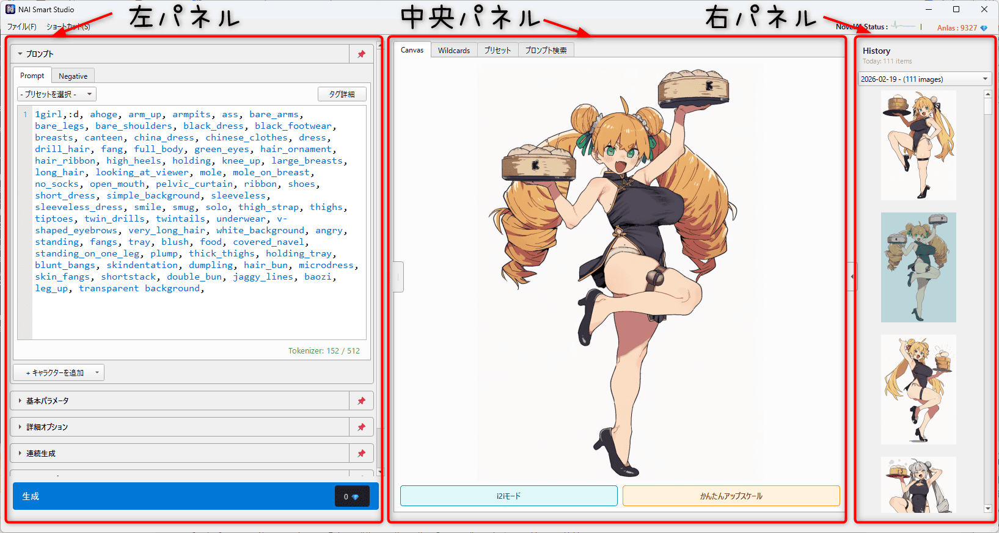
画面レイアウトのイメージです。
初回セットアップ
初回起動時は、まず NovelAI の API キーを登録します。API キーが未設定の場合はチュートリアルや設定画面から入力できます。
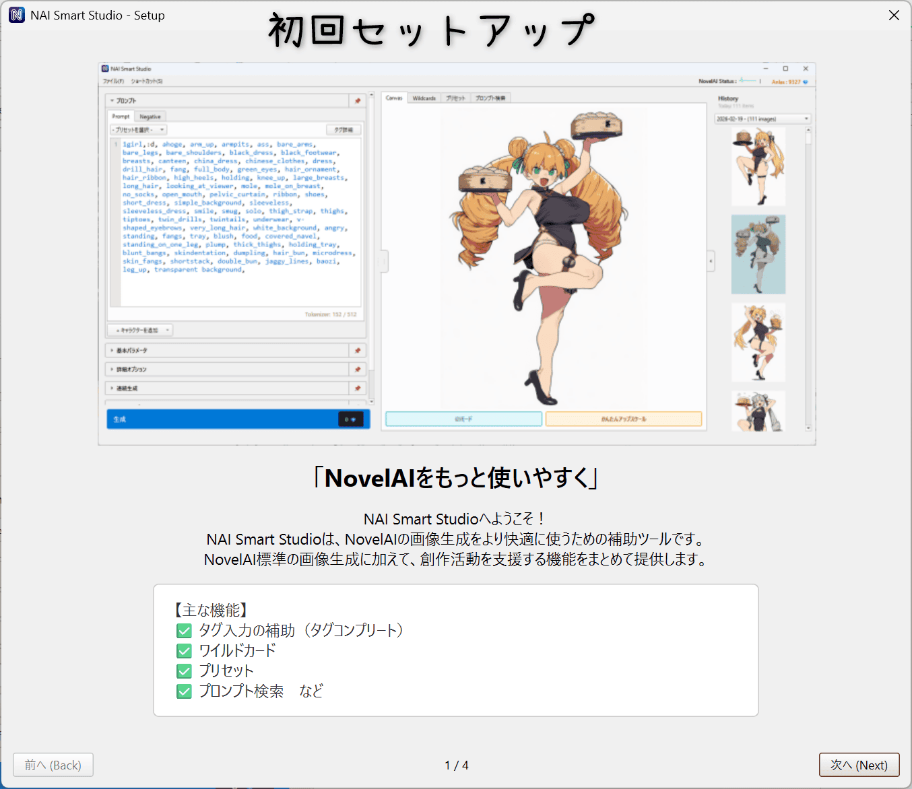
APIキーの取得方法
- NovelAI公式サイト にログインします。
- 右上のアカウントメニューから「アカウント設定」を開きます。
- 「永続的APIトークンを取得」から API キーをコピーします。
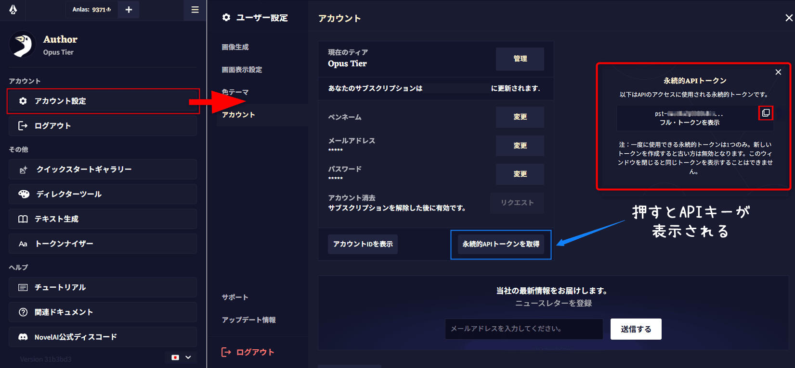
登録しておくと便利な項目
API キーの登録後は、ファイル → 設定 の「一般」タブで次の項目も確認しておくとスムーズです。
- APIキー管理: 複数アカウントを登録して切り替えできます。
- 出力先フォルダ: 生成画像の保存場所を変更できます。
- Wildcardフォルダ: Wildcards で使うファイルの参照先です。
- UI言語: 日本語 / English などに切り替えられます。
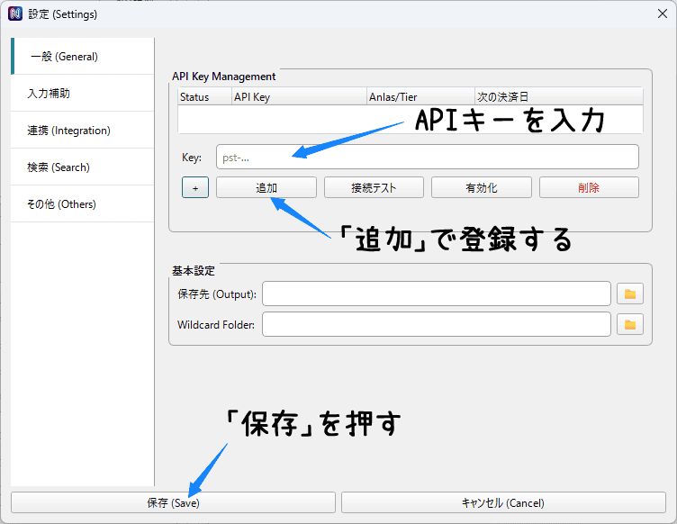
画像生成の基本
左パネルで Prompt と各種設定を決めて、「生成」を押すと画像が作成されます。通常生成は Ctrl + Enter、1回だけ生成したい場合は Ctrl + Alt + Enter も使えます。
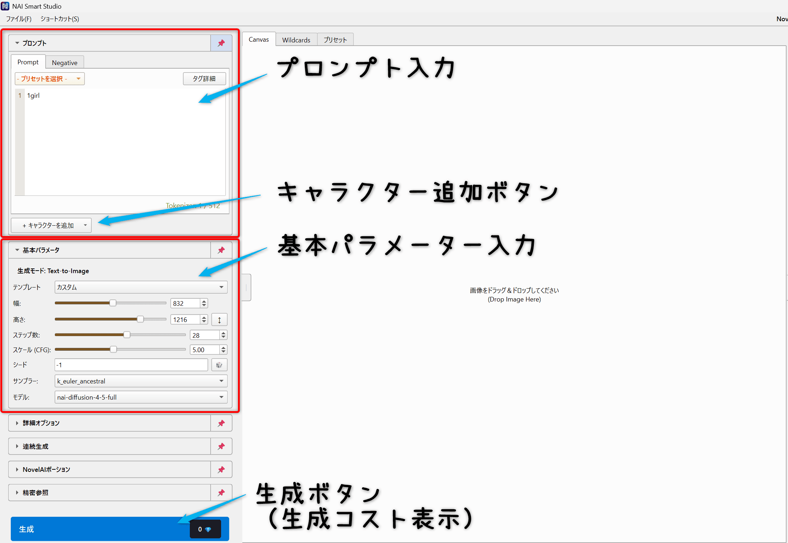
Prompt / Negative
- Prompt: 作りたい内容を入力します。
- Negative: 出したくない要素を入力します。
- 詳細: タグの確認や整理に使えます。プロンプトの量は右下のトークン表示でも確認できます。
キャラクタープロンプト
「キャラクターを追加」から、キャラクターごとの Prompt / Negative を分けて入力できます。複数人を描き分けたいときに便利です。
基本パラメータ
解像度テンプレート、幅・高さ、Steps、CFG、Seed、Sampler、Model など、普段の生成設定は左パネルにまとまっています。よく使う値がある場合は、そのまま保存され次回起動時にも引き継がれます。
生成コスト表示
生成ボタンの右側には、現在の設定での推定 Anlas コストが表示されます。モデルやサイズ、Steps を変えると自動で更新されます。
画像インポート
画像ファイルはドラッグ＆ドロップ、Ctrl + O、履歴からの Shift+クリック、画像の右クリックメニューの「インポート」から取り込めます。
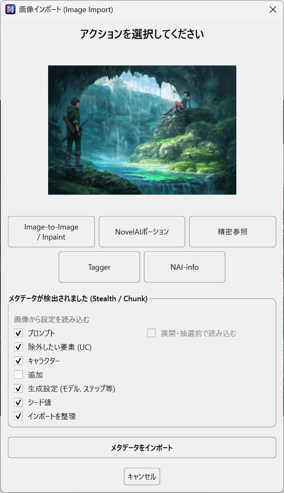
単一画像を取り込む
単一画像のインポートでは、次のような使い分けができます。
- Image-to-Image / Inpaint: 画像をキャンバスに読み込みます。
- NovelAIポーション: ポーション用スロットに画像を追加します。
- 精密参照: 精密参照スロットに画像を追加します。
- Tagger: 画像を Tagger タブに送り、タグ推論に使います。
- メタデータをインポート: Prompt、Negative、キャラクター、生成設定、Seed、ポーション情報などを今の画面に反映できます。
複数画像をまとめて取り込む
複数画像を一度にドロップした場合は、まとめて NovelAIポーション、精密参照、Tagger に送れます。参照画像を一気に用意したいときに便利です。
メタデータ取り込みの使いどころ
過去画像の再現や流用をしたいときは、履歴から Shift+クリックしてメタデータを取り込むのが便利です。必要な項目だけを選んで反映できます。
Image-to-Image / Inpaint
既存画像をベースに変化を付けたり、一部だけ描き直したいときに使います。キャンバスに画像を読み込むと、このモード向けの操作が使えるようになります。
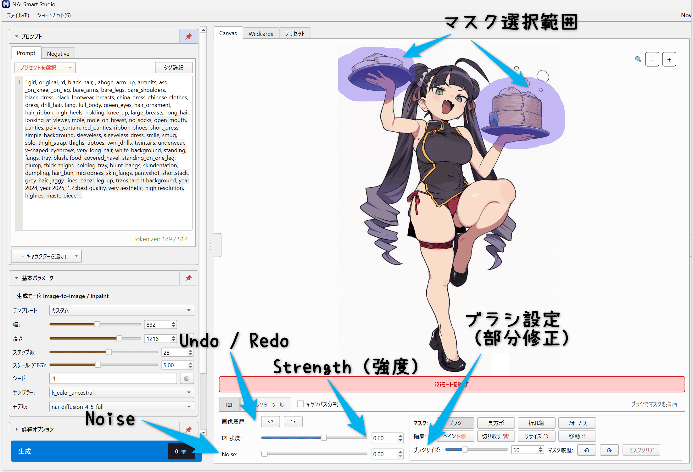
基本の流れ
- 画像をキャンバスに読み込みます。
- そのまま生成すると Image-to-Image として動作します。
- マスクを描いた状態で生成すると Inpaint になります。
マスク操作
- ブラシ: フリーハンドで塗れます。
- 長方形: 四角い範囲を一度に指定できます。
- 折れ線: 多角形の範囲を指定できます。
- 右ドラッグ: 塗ったマスクを消せます。
よく使う調整項目
- Strength: 元画像からどれだけ離れるかを調整します。
- Noise: 細部の変化量を調整します。
- Brush Size: マスク描画の太さを変えられます。
Undo / Redo
マスクのやり直しは Ctrl + Z / Ctrl + Y、キャンバス画像の戻し・やり直しは ← / → です。
かんたんアップスケール
キャンバスに読み込んだ画像を高解像度化するモードです。画像を読み込むと、中央下部に「かんたんアップスケール」への切り替えボタンが表示されます。
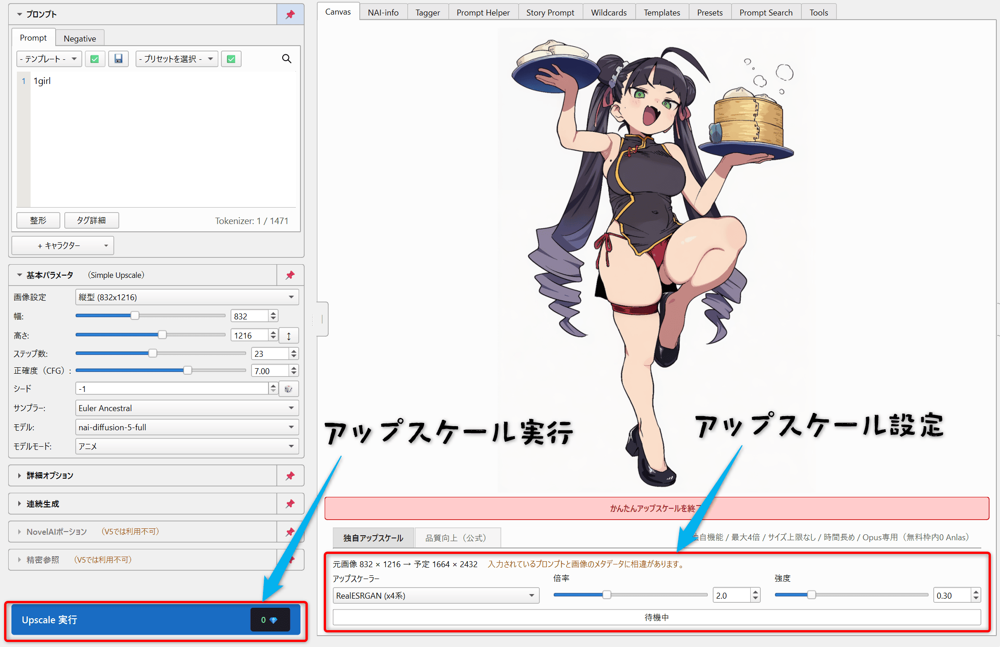
使い方
- アップスケールしたい画像をキャンバスに読み込みます。
- 「かんたんアップスケール」を押してモードを切り替えます。
- アップスケーラー、倍率、強度を調整します。
- 情報欄で出力サイズや分割数を確認してから実行します。
覚えておきたいポイント
- Opus アカウント向けの機能です。
- 選んだアップスケーラーによっては、ローカルモデルが必要です。
- 処理中プレビューが有効なら、進行中の見た目も確認できます。
-
保存先は通常生成と同じ
output/YYYY-MM-DD/です。
nai_sd_upscale_日時 形式で保存されます。
連続生成
連続生成では、指定枚数や指定時間に合わせて自動で生成を続けられます。Prompt Search のキューを消化したいときにも便利です。
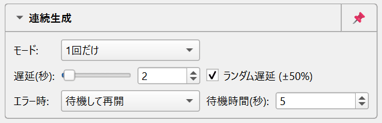
生成モード
- 1回だけ: その場で 1 回だけ生成します。
- 枚数指定: 指定枚数に達するまで生成します。
- 時間指定: 指定時間が終わるまで生成します。
- 中断するまで: 停止するまで生成し続けます。
補助設定
- 遅延時間: 1 枚ごとの待機時間です。
- ランダム遅延: 毎回少しずつ待機時間をずらせます。
- エラー時の動作: 停止するか、待機して再開するかを選べます。
NovelAIポーション
参照画像から雰囲気や画風の要素を取り込み、生成結果に反映させる機能です。複数スロットを使って混ぜることもできます。
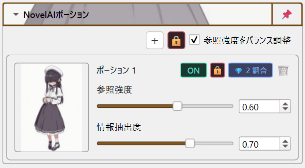
使い方
- 左パネルの「NovelAIポーション」を開きます。
- 「＋」から画像やポーションファイルを追加します。
- 参照強度と情報抽出度を調整します。
- 生成を実行します。未調合なら自動で調合してから進みます。
できること
- 複数スロット: 画像ごとに ON / OFF を切り替えられます。
-
保存と読込:
.naiv4vibe/.naiv4vibeBundleを保存・読込できます。 - 画像への埋め込み: Bundle 情報を含めた画像として書き出せます。
精密参照
キャラクターデザインや絵柄をより強く寄せたいときに使います。複数の参照画像を追加でき、参照の種類も切り替えられます。
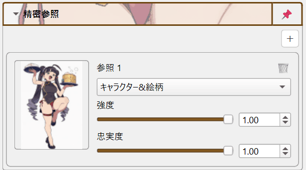
使い方
- 左パネルの「精密参照」を開きます。
- 「＋」から参照画像を追加します。
- キャラクター / 絵柄 / 両方のどれを参照するか選びます。
- 強度と抽出度を調整して生成します。
補足
- 複数画像を並べて比較しながら設定できます。
- 背景プレビューは設定で ON / OFF を切り替えられます。
- 主に v4 系モデル向けの機能です。
Tagger
画像からタグ候補を自動抽出して、Prompt 作成を補助するタブです。Prompt Search のセットアップが完了すると利用できるようになります。
使い方
- 画像を Tagger タブに送ります。インポートダイアログからも直接送れます。
- しきい値を調整してタグ推論を実行します。
- 候補一覧を確認し、必要なタグだけ選択します。
- 「選択を追加」または「すべて追加」で Prompt に反映します。
できること
- スコア確認: 各タグの推定スコアを見ながら絞り込めます。
- 日本語別名表示: 対応タグは日本語別名も確認できます。
- Wiki参照:
?ボタンから Danbooru Wiki を開けます。
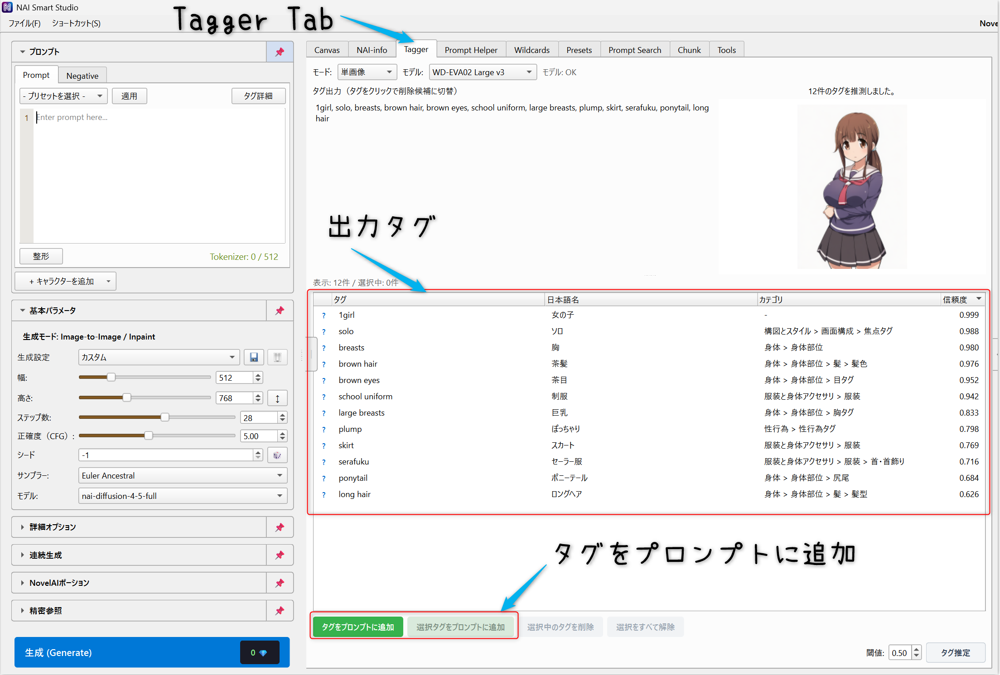
Tagger タブの画面です。
プロンプトチャンク
よく使うプロンプト片を保存して、必要なときに呼び出せる機能です。頻繁に使う品質タグや作風、共通フレーズを「部品」としてまとめておきたいときに便利です。
最初の準備
- 「設定」の「プロンプトチャンク」で機能を有効にします。
- セットアップウィザードを開きます。
- メール / パスワードまたは Google ログイン補助を使って認証します。
- 完了すると中央タブに「プロンプトチャンク」が表示されます。
使い方
- 登録: カテゴリを作り、その中にプロンプトチャンクを保存します。
- 挿入: 一覧から選んで Prompt に挿入します。
- 更新: 必要に応じてサーバー側の内容を取得し直せます。
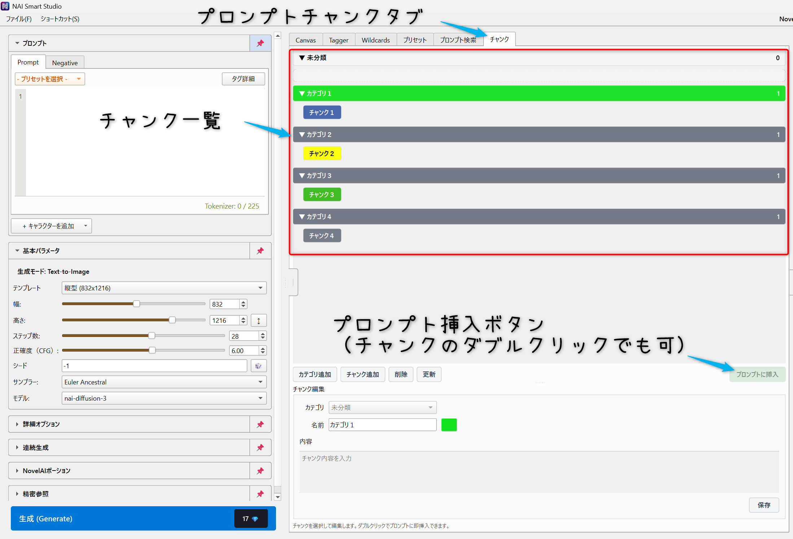
プロンプトチャンクタブの画面です。
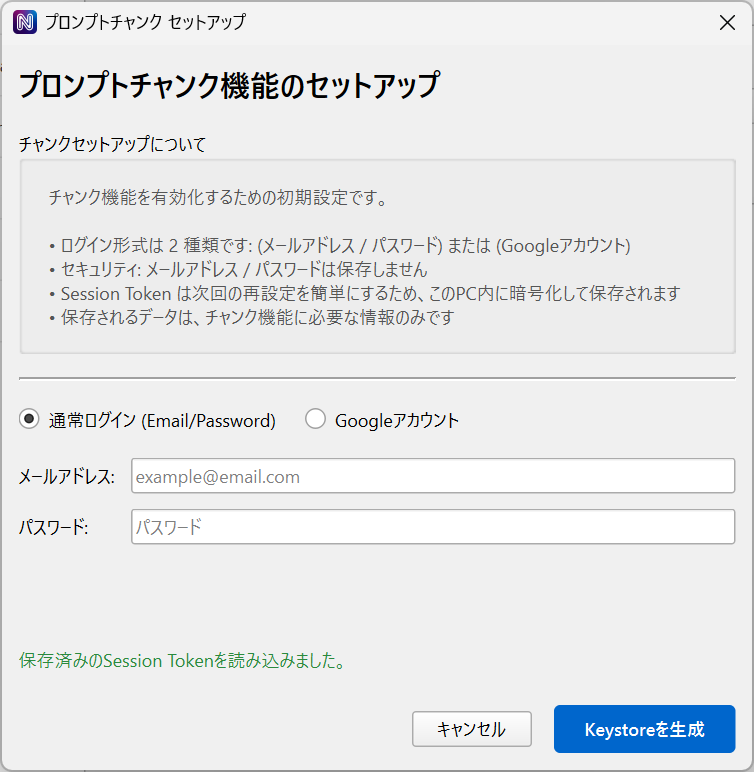
プロンプトチャンクのセットアップ画面です。
Wildcards（ランダム要素）
指定した候補の中からランダムで単語を挿入できる機能です。髪色、服装、背景、ポーズの差分をまとめて作るときに便利です。
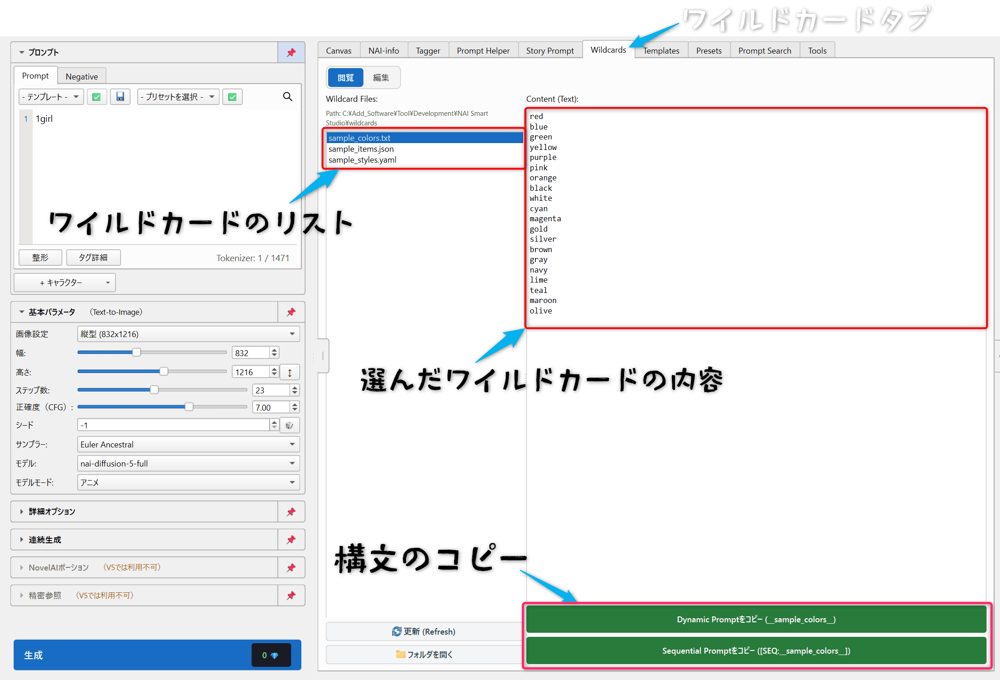
基本の書き方
{A|B|C}: 候補の中から 1 つをランダムに選びます。__name__: Wildcard ファイルから 1 つを選びます。__folder/name__: フォルダを含めて指定できます。__file/key__: YAML ファイルのキーを指定できます。
使い方
- Wildcard フォルダに TXT または YAML ファイルを用意します。
- 中央の Wildcards タブで内容を確認し、構文をコピーします。
- Prompt に貼り付けて生成します。
補足
- TXT は 1 行 1 候補です。空行と
#行は無視されます。 - YAML ではキーごとに候補を分けて管理できます。
- ファイルの編集は別途テキストエディタで行ってください。
プリセット
よく使う Prefix / Suffix や除外ルール、整形ルールを保存して切り替える機能です。中央の「プリセット」タブと、Prompt 上部のプリセット選択から利用できます。
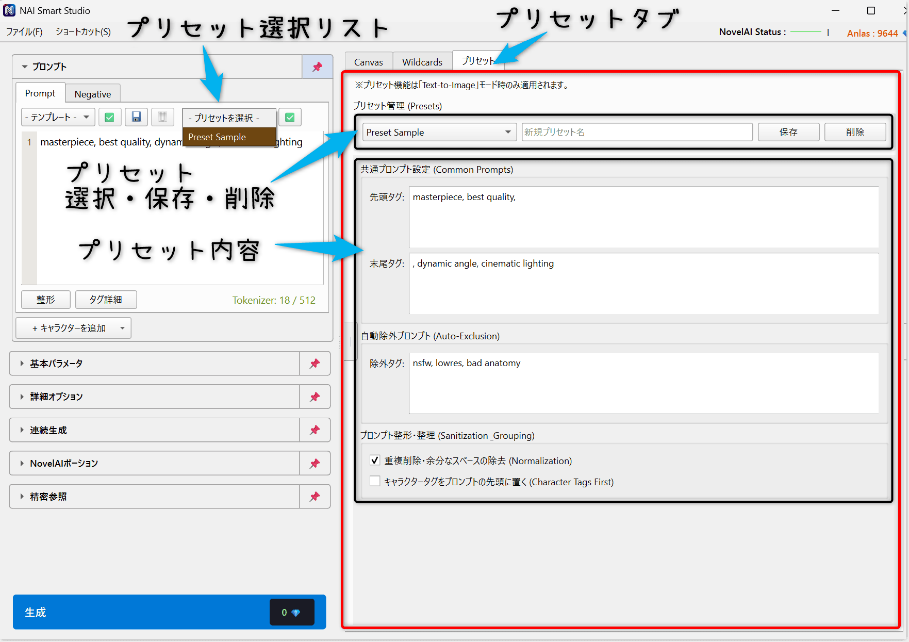
主な機能
- Prefix / Suffix: よく使うタグを自動で付けられます。
- 自動除外: 指定した単語を自動で取り除けます。
- 整形: 重複整理や余分なスペース整理をまとめて行えます。
- 保存と切替: 用途別に複数のプリセットを登録できます。
プロンプト検索
プロンプトデータベースを検索して、ヒットした結果を生成キューへ送れる機能です。複数の候補をまとめて試したいときに向いています。
セットアップ
初回利用時は、検索データのダウンロードとセットアップが必要です。「設定」→「検索」からセットアップウィザードを起動してください。
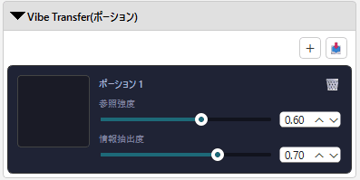
セットアップが完了して Prompt Search を有効にすると、中央タブに「プロンプト検索」が表示されます。Tagger もあわせて使えるようになります。
検索の流れ
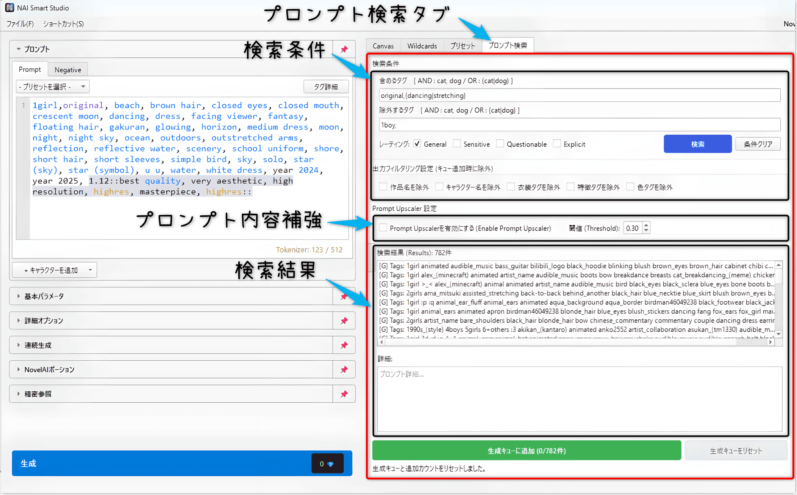
- 含めたいタグ、除外したいタグ、レーティングを指定します。
- 検索結果を確認します。
- 「検索結果を生成キューに追加」でキューへ送ります。
- 通常の「生成」を押すと、キューに積まれた内容から順に生成されます。
補助機能
- 出力フィルタリング: 作品名や不要なタグの整理に使えます。
- Prompt Upscaler: キュー処理中にタグ推論を使って Prompt を補強できます。
設定・その他機能
一般
- APIキー管理: 複数キーの登録、接続確認、アクティブ切替ができます。
- 保存先: 出力フォルダや Wildcard フォルダを設定できます。
- UI言語: 表示言語を切り替えられます。
- その他: 画像形式、処理中プレビュー、起動時更新確認などを設定できます。
入力補助
タグ補完、強調表示、日本語補完、入力後のカンマ補助、Prompt フォント変更などをまとめて設定できます。
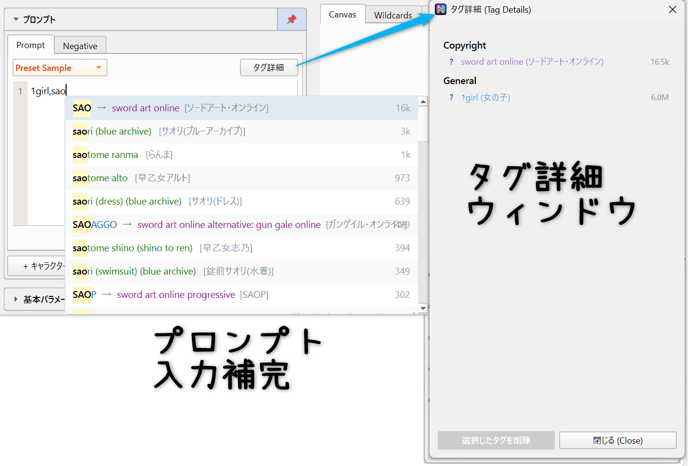
Eagle 連携
Eagle を使っている場合は、生成画像を自動または手動で送れます。Prompt やメタデータをタグ化して一緒に送ることもできます。
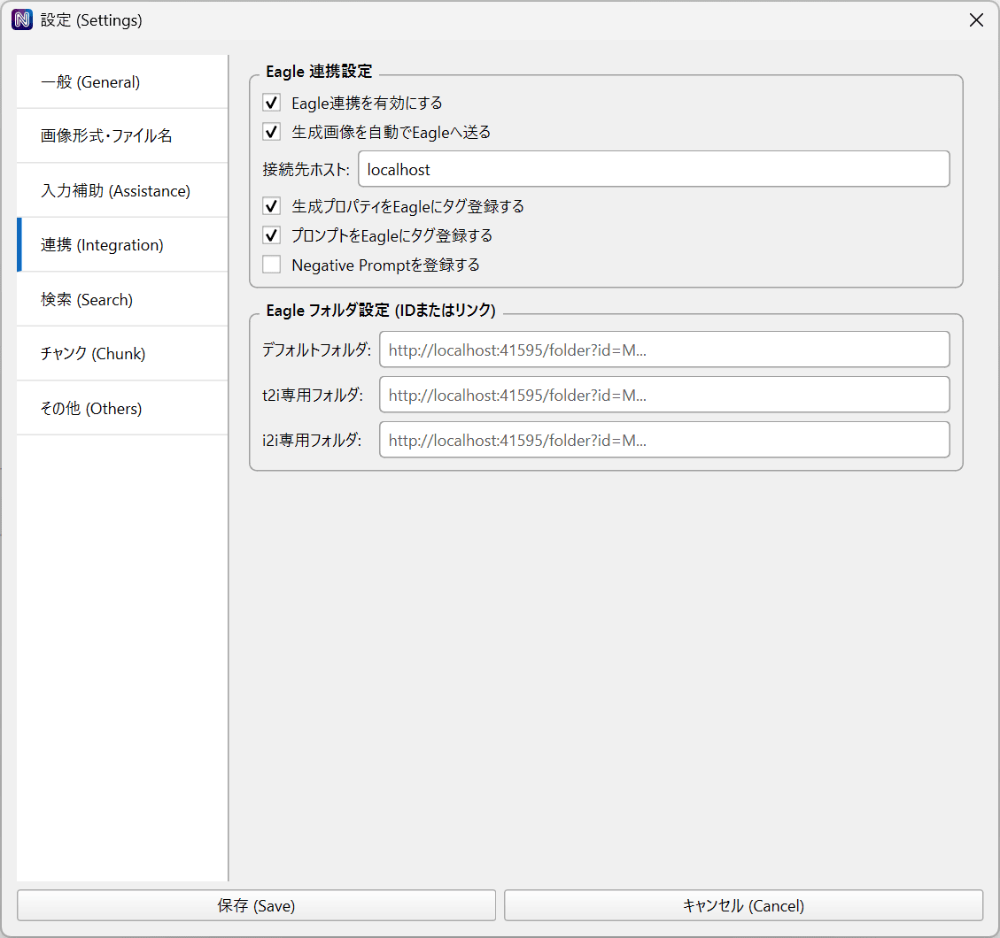
履歴・画像操作
- 通常クリック: 履歴画像をキャンバスに読み込みます。
- Shift+クリック: インポートダイアログを開きます。
- 右クリック: 保存、コピー、Eagle 送信、保存先フォルダを開く、インポートが行えます。
検索 / プロンプトチャンク / その他
- 検索: Prompt Search の有効化とセットアップ状況を確認できます。
- プロンプトチャンク: プロンプトチャンクの有効化、認証状況、セットアップを管理できます。
- その他: ログ出力や容量関連の設定ができます。
設定画面一覧
一般
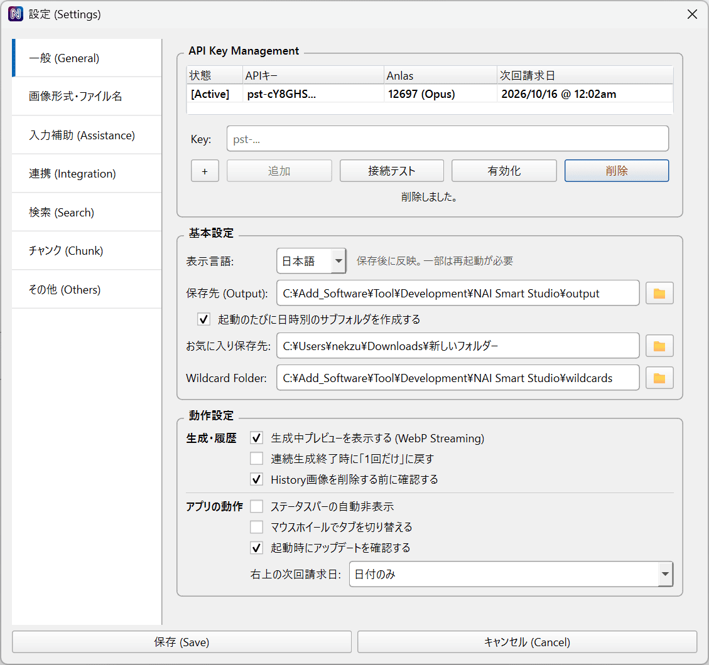
入力補助
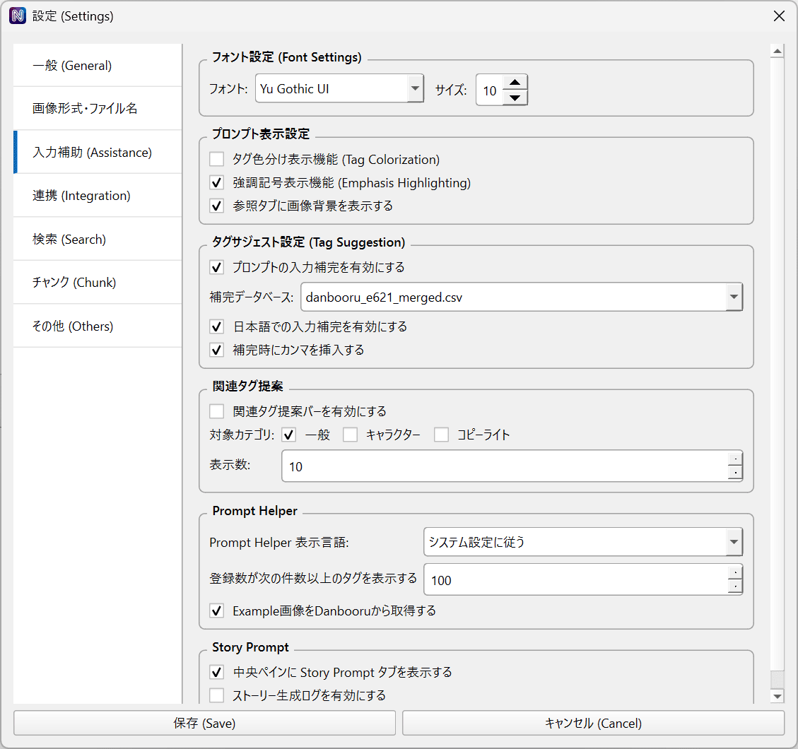
検索
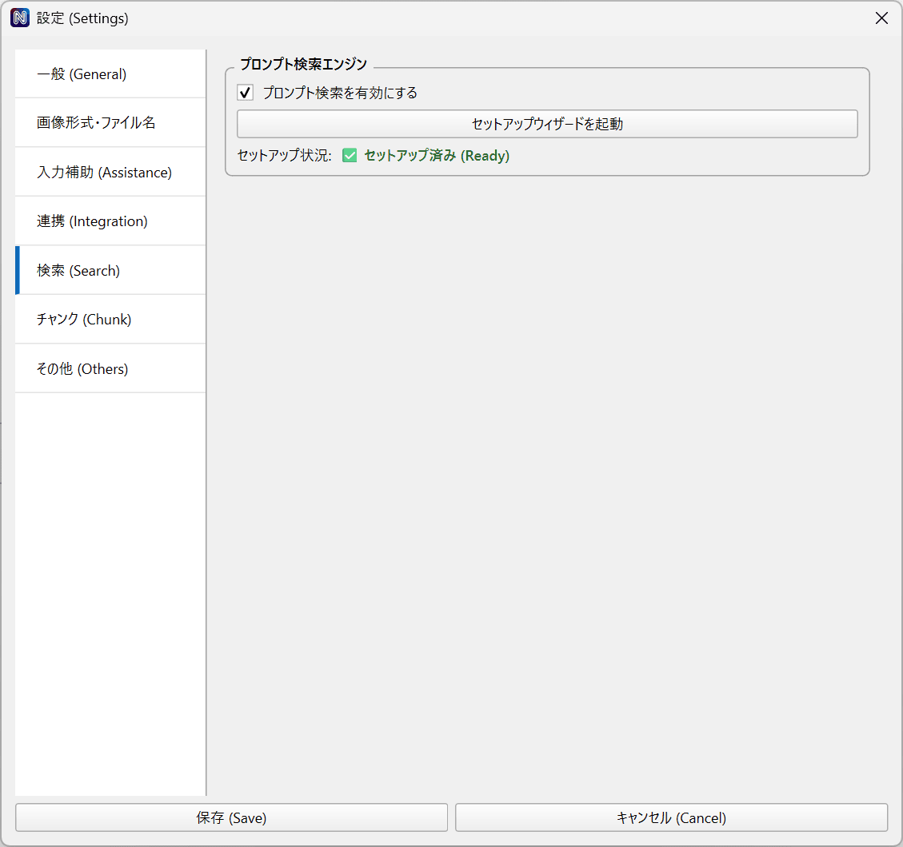
その他
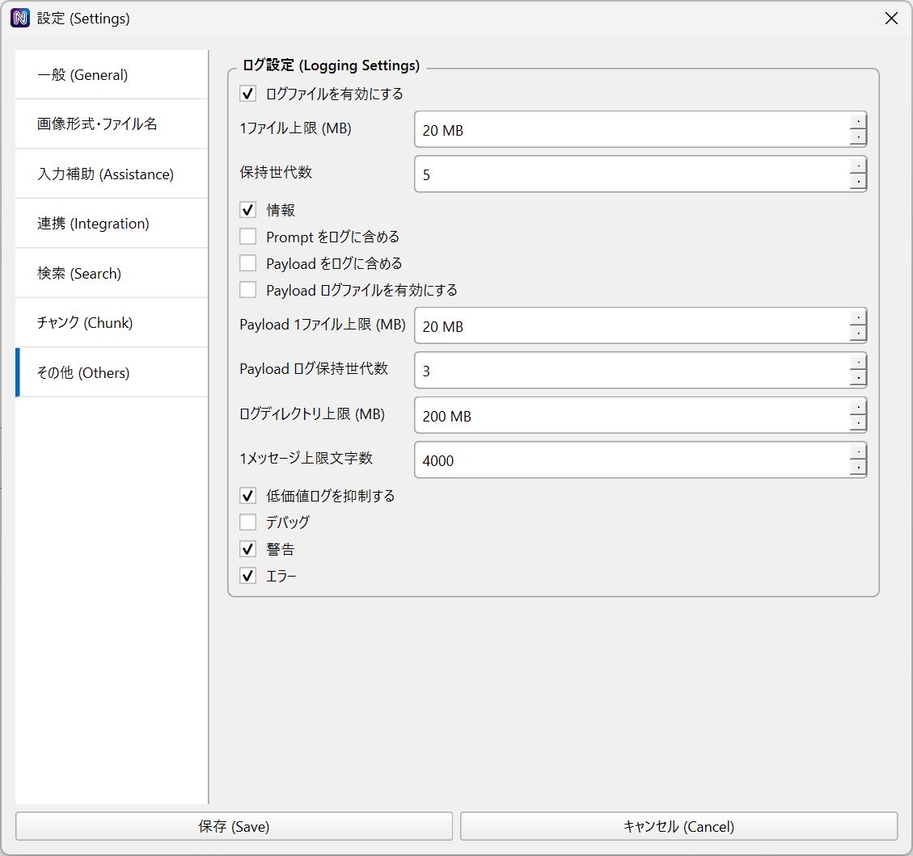
プロンプトチャンク
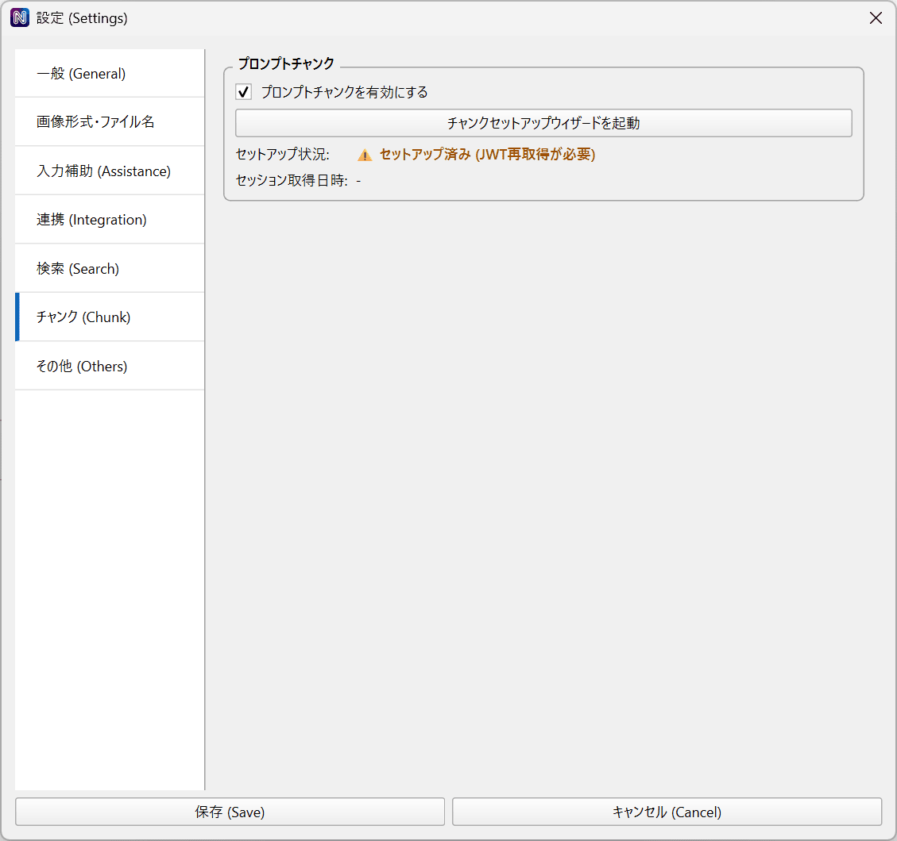
ショートカット
よく使うショートカットの一覧です。メニュー「ショートカット」からも確認できます。
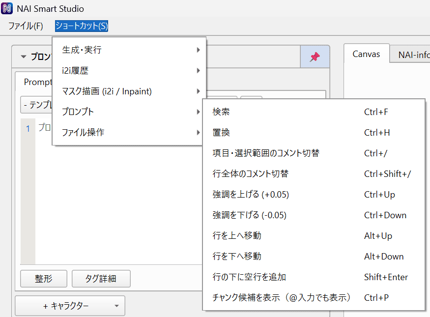
生成・実行
- Ctrl + Enter: 生成開始
- Ctrl + Alt + Enter: 1回だけ生成
- Ctrl + Shift + Enter: 連続生成開始
キャンバス / マスク
- ←: キャンバス画像 Undo
- →: キャンバス画像 Redo
- Ctrl + Z: マスク Undo
- Ctrl + Y: マスク Redo
プロンプト編集
- Ctrl + /: コメント切替
- Ctrl + ↑: 強調を増やす
- Ctrl + ↓: 強調を減らす
- Shift + Enter: 下に空行を追加
- Ctrl + P: プロンプトチャンクの補完 / 挿入補助
画像ファイル操作
- Ctrl + O: 画像を開く
- Ctrl + S: 名前を付けて保存
- Ctrl + C: 画像をコピー
- Ctrl + E: Eagle に送信
- Ctrl + Shift + E: 保存先フォルダを開く